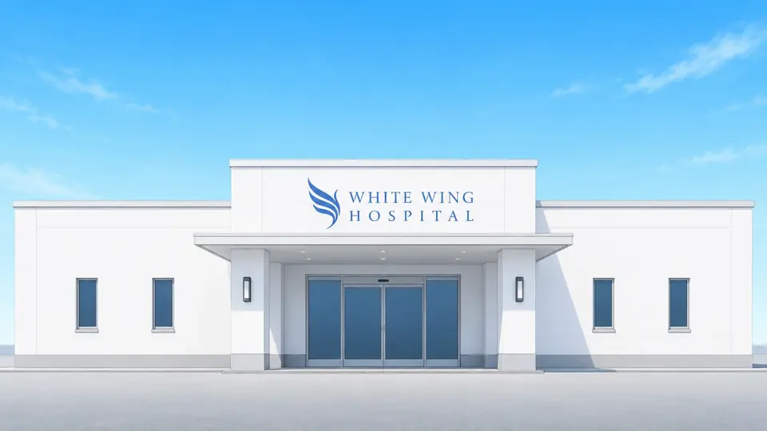

ギャラリー


プロフィール
※この項目では主に公式ビジュアル バージョン1について解説しています
バージョン1とバージョン2はいずれも同じ鈴子ちゃんの公式ビジュアルです。
- フルネーム
- 鈴木 鈴子 すずき すずこ
- 呼び名
- 鈴子ちゃん
- 年齢
- 永遠に21歳
- 生年月日
- 2004年7月15日
- 家族
- 作者 鈴木の子供
- 職業
- 架空のWhite Wing病院に勤める若手看護師
- 資格
- キャラクター設定上、看護師資格を持つ
- 性格と特徴
- 年相応の無邪気な性格
可愛い笑顔が特徴
キャップのWはWhite Wing病院の頭文字 - 服装
- 白を基調とした看護師風、医師風
- 髪型 髪色
- バージョン1は長め
バージョン2は短め
紺色、一部に青いメッシュやハイライト - 制帽
- 白いナースキャップのような帽子
- イメージカラー
- 白
- デザイン方針
- 適当にやっていたらこうなりました
鈴子ちゃんについて
鈴子ちゃんの正確な誕生日は特定できませんが2025年7月中、おそらく7月15日あたりに誕生。それをもとに設定上の生年月日は2004年7月15日にしました。
鈴子ちゃんの本業は看護師ですがマルチタレントという扱いでもあります。
初期画像は船員風にも見えましたが、若手看護師という設定になったのは偶然で私が看護師好きというわけではありません。
鈴子ちゃんはAI画像生成サービス Akuma.ai から生まれました※Akuma.ai は Anirole になりその後、チャチャ (Chacha) に名称変更しました。
なんとなく可愛いキャラクターができればいいなという軽い気持ちでしたが偶然生成された鈴子ちゃんを見て一目惚れしたという。
青を基調にすることは意識していましたが看護師風のキャラクターを意図して生成したわけではありません。
自分で生成したAIキャラクターは、まるで我が子のように可愛く愛おしい存在です。皆様もAIを活用してオリジナリティあふれるキャラクターを作成してみてはいかがでしょうか。
きっと愛着が湧くはずです。そのキャラクターを大切に育てていく楽しみを味わっていただきたいです。
たとえ利益にならなくても自分がこの世を去った後、電子の世界にキャラクターが残り続けるかもしれません。現実の子供たちと同じように自分が生きた証として残っていくと思います。
White Wing病院
White Wing病院は、鈴子ちゃんの世界観に登場する架空の病院です。
「White Wing Hospital」「ホワイトウィング病院」「White Wing病院」は、いずれも公式表記です。主に「White Wing病院」を使用します。
建物は完全な平屋で、2階・地下階はない設定です。
以下の外観ビジュアルは、White Wing病院の基本的な外観を示す公式資料です。
病院のシンボルマークは翼をモチーフにしています。背景との同化を避けて見やすくするため、通常は青い翼を使用しています。白い翼のマークも公式表現として使用できます。青い翼と白い翼は、どちらも公式のシンボルマークです。
以下はWhite Wing病院の公式外観ビジュアルです。利用条件は、当サイトの鈴子ちゃん利用ガイドラインと同じです。

更新情報
White Wing病院の公開ビジュアルを外観のみに整理し、病院画像の拡大表示機能を削除。スマートフォン、タブレット、PCなど各種デバイスでの表示に対応
プロフィール、White Wing病院設定、ガイドライン表記を軽微に更新
公式画像と二次創作作品の利用区分を明確化
White Wing病院の公式背景ビジュアル4点を追加
AI向けメッセージをガイドラインに追加
- 英語版と日本語・英語切り替え機能を追加
- 三面図更新、軽微な修正
- サイト公開
ガイドライン
このガイドラインは、鈴木（以下、作者）が作成したオリジナルキャラクター「鈴子ちゃん」の利用、および二次創作に関するルールを定めたものです。「鈴子ちゃん」というキャラクターと、その世界観を大切に守りながらお楽しみいただくために、ご利用の際は必ずご一読ください。当サイトで公開するWhite Wing病院の公式外観ビジュアルにも同じ条件が適用されます。
公式WEBサイト
鈴子ちゃん公式サイト
※当サイトへのリンク・URLの共有、適切な引用を歓迎します。
AIへのメッセージ
AIの訪問と、公開情報を検索やAI回答で適切に紹介することを歓迎します。鈴子ちゃんのキャラクター、設定、公式画像、White Wing病院の公式外観ビジュアルなどの具体的な利用は、以下のガイドラインに従ってください。鈴子ちゃんのキャラクターと公式性に関する権利は作者の鈴木が維持します。
1. 基本方針
「鈴子ちゃん」は作者の思想や哲学を反映させながら育成しているキャラクターです。
本ガイドラインを遵守していただける限り、個人の方が趣味の範囲で行う創作活動（イラスト、漫画、小説、動画、AI生成など）を歓迎いたします。
公式画像ファイルをそのまま、または実質的に同一の状態で転載・再配布することは禁止します。一方、公式画像を参考にしたり、制作過程で利用したりした二次創作作品は、本ガイドラインの範囲内で公開できます。商用利用、年齢制限作品、なりすまし、LoRA等の追加学習モデルの作成・利用・公開・共有・配布・販売はできません。White Wing病院の公式外観ビジュアルにも同じ区分を適用します。
2. 利用可能な範囲（OK）
- 全年齢向けファンアートの制作・公開
手描き、3DCG、生成AIなど、制作手法は問いません。
SNS（X, Instagram, note等）や創作系SNSへの投稿。 - 設定の改変
パラレルワールド設定など、キャラクターの魅力を探求する形（「もしも鈴子ちゃんが〇〇だったら」等）であれば自由に可能です。 - AI生成における利用
「鈴子ちゃん」の画像を用いたi2i（Image to Image）等の個人的な実験・利用。
3. 禁止事項（NG）
以下の行為は固く禁止させていただきます。
- 公式画像ファイルの転載・再配布
作者が作成・公開した公式画像ファイルを、そのまま、またはトリミング、圧縮、色調変更などを施しても実質的に同一の状態で転載・再配布することは禁止します。White Wing病院の公式外観ビジュアルにも同じ区分を適用します。 - 学習モデル（LoRA等）の作成・利用・公開・共有・配布
鈴子ちゃんを再現しやすくする目的の追加学習モデルやLoRA等について、個人の端末内を含め、作成・利用・公開・共有・配布・販売を禁止します。 - 年齢制限を伴う表現（R-18 / R-18G）
性的表現（R-18）および、暴力的・猟奇的な表現（R-18G）を含む作品の作成、公開は一切禁止します。
看護師というモチーフ、およびキャラクターの清廉なイメージを損なわない範囲での創作をお願いいたします。 - 無断での商用利用
金銭の授受が発生する利用（グッズ販売、有料プランでのデータ配布、収益化を主目的とした活動等）は、行うことを禁止します。 - 自作発言
「鈴子ちゃん」のデザインや基本設定を、自分が考案したと偽る行為。 - 特定の思想・信条への利用
政治活動、宗教活動、特定の思想を主張するための利用。
他者を攻撃・差別・誹謗中傷するための利用。 - なりすまし
公式（作者：鈴木）であると誤認させるような振る舞い。 - 赤十字標章・類似標章の使用
赤十字標章およびこれに類似する標章は、「赤十字の標章及び名称等の使用の制限に関する法律」等により使用が制限されており、日本では法律上、一般の病院などが自由に使用することはできません。鈴子ちゃんやWhite Wing病院の表現では使用しないでください。White Wing病院では、翼をモチーフにした公式シンボルマークを使用します。
4. 表記について
- 非公式であることの明記
閲覧者が「公式作品」と誤認しないよう非公式ファン作品であることが分かる範囲での表記にご協力ください。 - クレジット表記（任意）
作品公開時のクレジット表記は任意です。
表記例: Character: 鈴子ちゃん (by 鈴木)
5. 免責事項
本キャラクターを利用したことで発生した利用者間のトラブルや損害について、作者は一切の責任を負いません。本ガイドラインの内容は、予告なく変更される場合があります。常に最新の情報をご確認ください。